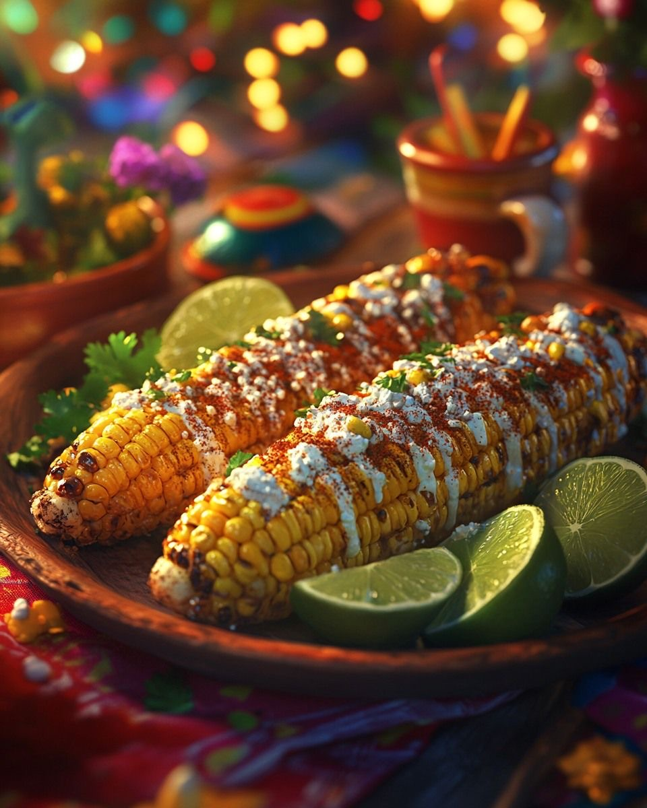
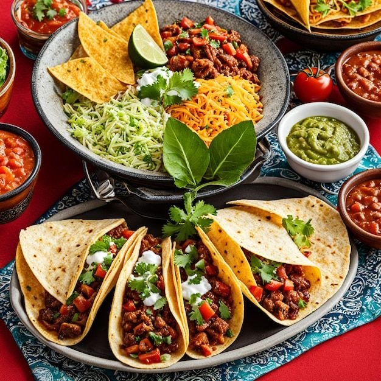
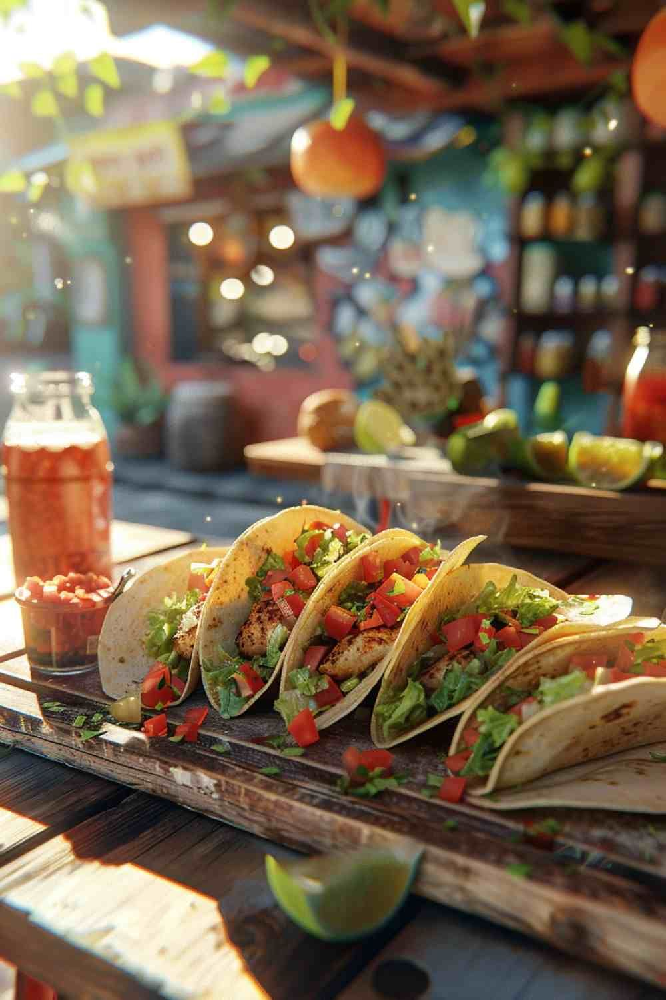
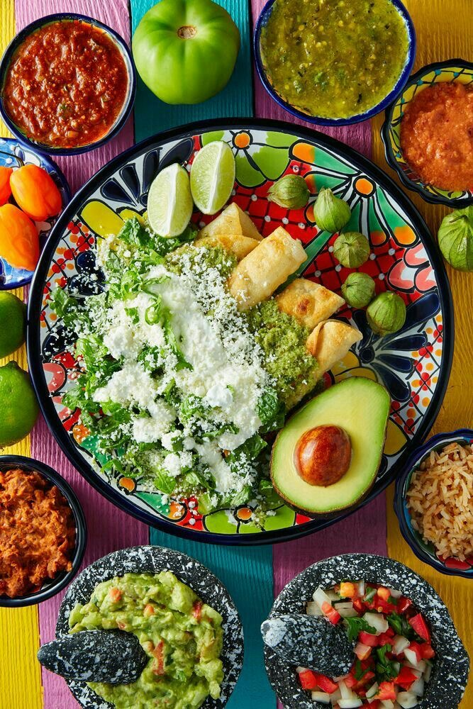
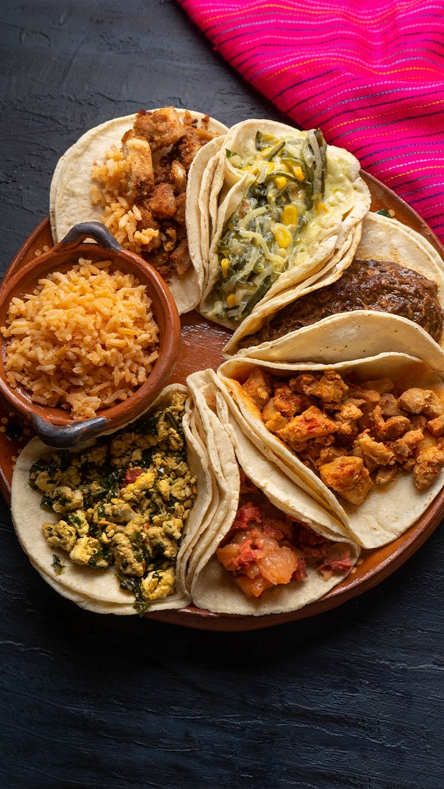

Pontos Turísticos

Chichen Itza - Patrimônio da Humanidade, símbolo da civilização maia

Tulum - Ruínas maias à beira do mar do Caribe

Palácio de Bellas Artes - Centro de arte e cultura mexicana
Culinária Mexicana

Elote - Milho assado ou cozido na espiga

Pasta de guacamole - guacamole pastosa com tortilhas

Tacos - um dos pratos mais famoso do México

Enchiladas Verdes - tortilhas recheadas com frango, coberto com molho verde

Tábuas de Taco - Uma variedade de um dos pratos mais famosos do México
Pinturas culturais

Calaveras Mexicanas - são muito utilizadas no dia dos mortos

Calaveras Mexicanas - podem ser feitas de papel machê, cerâmica ou plástico